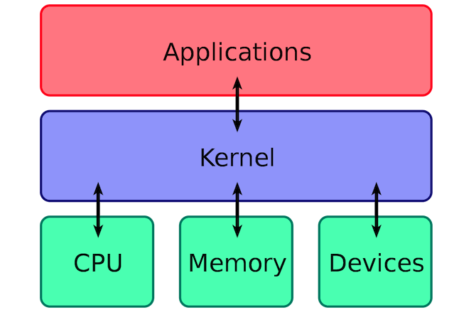

1.What is an operating system, and what are its main functions?
An operating system is a software that manages computer hardware and provides services for applications to run efficiently.
The kernel of an operating system is its core component, responsible for memory management, hardware device management, file system management, and application management.
2.What is System Call?
Based on how processes access resources, we can divide the operation of processes on the system into two levels:
User mode: Processes running in user mode can directly access data from user programs.
Kernel mode: Processes or programs running in kernel mode can access almost any resource on the computer without restrictions.
Most of the programs we run operate in user mode. But what if we need to access the system-level subfunctions provided by the operating system? That's where system calls come in!
In other words, in the user programs we run, any operation related to system-level resources (such as file management, process control, memory management, etc.) must be requested through system calls to the operating system, which then handles them on behalf of the program.
These system calls can be broadly categorized by their functionalities: